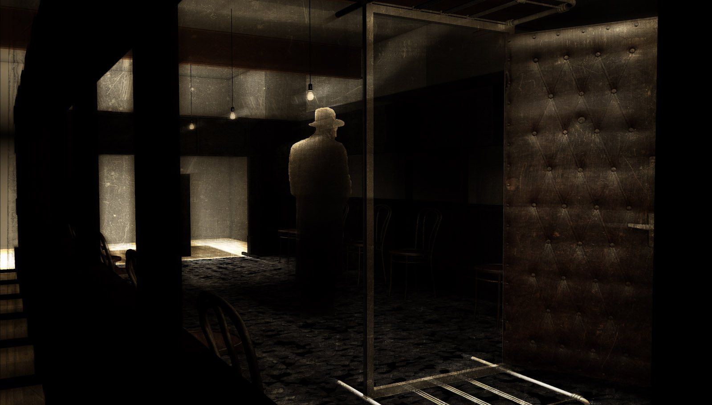
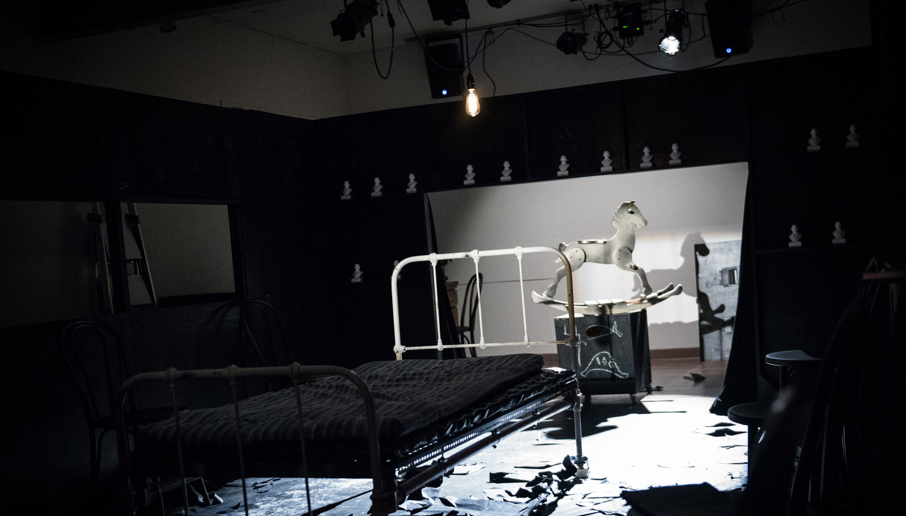
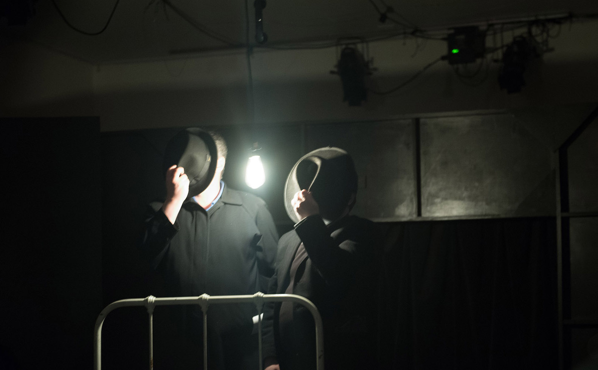
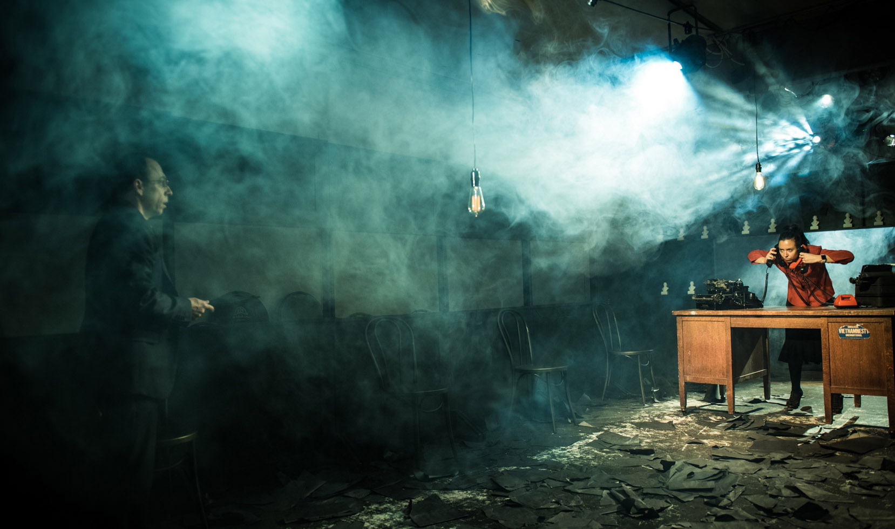
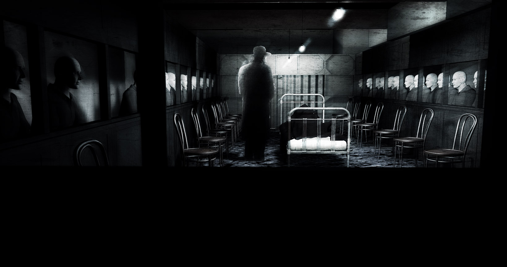
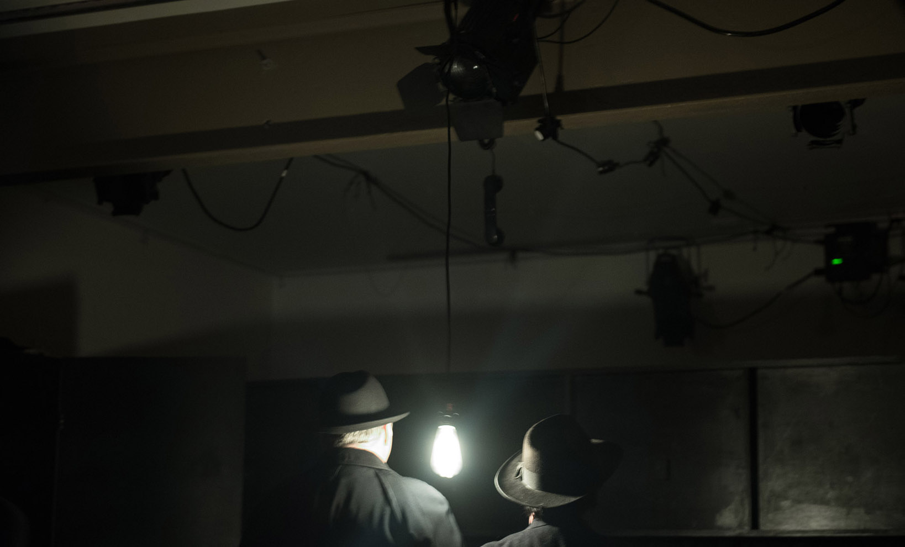
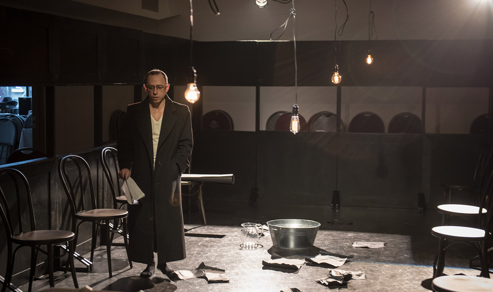
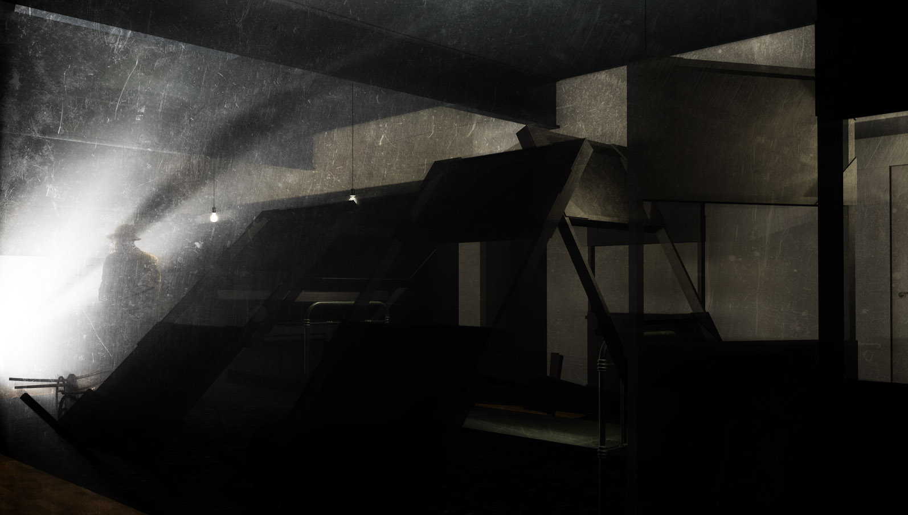
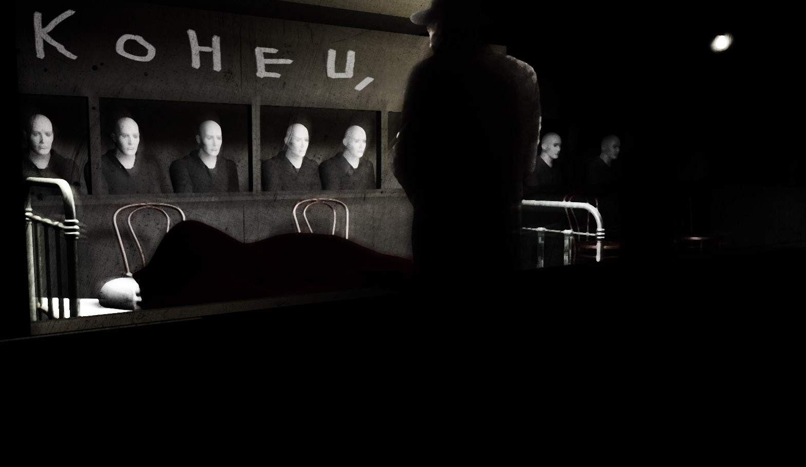

Краткое изложение
В предисловии автор сообщает читателю, что записки эти принадлежат перу его друга Максудова, покончившего с собой и завещавшего ему их выправить, подписать своим именем и выпустить в свет. Сергей Леонтьевич Максудов, сотрудник газеты «Вестник пароходства», увидев во сне родной город, снег, гражданскую войну, начинает писать об этом роман. Закончив, читает его своим знакомым, которые утверждают, что роман этот опубликовать ему не удастся. Отправив в два толстых журнала отрывки из романа, Максудов получает их назад с резолюцией «не подходит». Максудов решает, что жизни его пришёл конец. Выкрав у приятеля револьвер, готовится покончить с собой, но раздаётся стук в дверь, и в комнате появляется Рудольфи, редактор-издатель единственного в Москве частного журнала «Родина». Рудольфи читает роман Максудова и предлагает его издать.
Максудов незаметно возвращает украденный револьвер, бросает службу в «Пароходстве» и погружается в другой мир: бывая у Рудольфи, знакомится с писателями и издателями. Наконец роман напечатан, и Максудов получает несколько авторских экземпляров журнала. В ту же ночь у Максудова начинается грипп, а когда, проболев десять дней, он отправляется к Рудольфи, выясняется, что Рудольфи неделю назад уехал в Америку, а весь тираж журнала исчез. Максудов возвращается в «Пароходство» и решает сочинять новый роман. Однажды ночью он видит во сне тех же людей, тот же дальний город, снег, бок рояля. Достав из ящика книжку романа, Максудов, присмотревшись, видит волшебную камеру, выросшую из белой страницы, а в камере звучит рояль, движутся люди, описанные в романе. Максудов решает писать то, что видит, и, начав, понимает, что пишет пьесу.
Неожиданно Максудов получает приглашение от Ильчина, режиссёра Независимого Театра — одного из выдающихся московских театров. Ильчин сообщает Максудову, что он прочитал его роман, и предлагает Максудову написать пьесу. Максудов признается, что пьесу он уже пишет, и заключает договор на её постановку Независимым Театром, причём в договоре каждый пункт начинается со слов «автор не имеет права» или «автор обязуется». Максудов знакомится с актёром Бомбардовым, который показывает ему портретную галерею театра с висящими в ней портретами Сары Бернар, Мольера, Шекспира, Нерона, Грибоедова, Гольдони и прочих, перемежающимися портретами актёров и сотрудников театра.
Через несколько дней, направляясь в театр, Максудов видит у дверей афишу, на которой после имён Эсхила, Софокла, Лопе де Вега, Шиллера и Островского стоит: Максудов «Чёрный снег». Бомбардов объясняет Максудову, что во главе Независимого Театра стоят двое директоров: Иван Васильевич, живущий на Сивцевом Вражке, и Аристарх Платонович, путешествующий сейчас по Индии. У каждого из них свой кабинет и своя секретарша. Директора не разговаривают друг с другом с 1885 года, разграничив сферы деятельности, однако это не мешает работе театра. Секретарша Аристарха Платоновича Поликсена Торопецкая под диктовку Максудова перепечатывает его пьесу.
Максудов с изумлением разглядывает развешанные по стенам кабинета фотографии, на которых Аристарх Платонович запечатлён в компании то Тургенева, то Писемского, то Толстого, то Гоголя. Во время перерывов в диктовке Максудов разгуливает по зданию театра, заходя в помещение, где хранятся декорации, в чайный буфет, в контору, где сидит заведующий внутренним порядком Филипп Филиппович. Максудов поражён проницательностью Филиппа Филипповича, обладающего совершенным знанием людей, понимающего, кому и какой билет дать, а кому и не дать вовсе, улаживающего мгновенно все недоразумения.
Иван Васильевич приглашает Максудова в Сивцев Вражек для чтения пьесы, Бомбардов даёт Максудову наставления, как себя вести, что говорить, а главное — не возражать против высказываний Ивана Васильевича в отношении пьесы. Максудов читает пьесу Ивану Васильевичу, и тот предлагает её основательно переделать: сестру героя необходимо превратить в его мать, герою следует не застрелиться, а заколоться кинжалом и т. п., — при этом называет Максудова то Сергеем Пафнутьевичем, то Леонтием Сергеевичем. Максудов пытается возражать, вызвав явное неудовольствие Ивана Васильевича.
Бомбардов объясняет Максудову, как надо было себя вести с Иваном Васильевичем: не спорить, а на все отвечать «очень вам благодарен», потому что Ивану Васильевичу никто никогда не возражает, что бы он ни говорил. Максудов растерян, он считает, что все пропало. Неожиданно его приглашают на совещание старейшин театра — «основоположников» — для обсуждения его пьесы. Из отзывов старейшин Максудов понимает, что пьеса им не нравится и играть её они не хотят. Убитому горем Максудову Бомбардов объясняет, что, напротив, основоположникам очень понравилась пьеса и они хотели бы в ней играть, но там нет для них ролей: самому младшему из них двадцать восемь лет, а самому старшему герою пьесы — шестьдесят два года.
Несколько месяцев Максудов живёт однообразной скучной жизнью: ежедневно ходит в «Вестник пароходства», вечерами пытается сочинять новую пьесу, однако ничего не записывает. Наконец он получает сообщение о том, что режиссёр Фома Стриж начинает репетировать его «Чёрный снег». Максудов возвращается в театр, чувствуя, что уже не может жить без него, как морфинист без морфия. Начинаются репетиции пьесы, на которых присутствует Иван Васильевич.
Максудов очень старается ему понравиться: он отдаёт через день утюжить свой костюм, покупает шесть новых сорочек и восемь галстуков. Но все напрасно: Максудов чувствует, что с каждым днём нравится Ивану Васильевичу все меньше и меньше. И Максудов понимает, что это происходит потому, что ему самому совершенно не нравится Иван Васильевич. На репетициях Иван Васильевич предлагает актёрам играть различные этюды, по мнению Максудова, совершенно бессмысленные и не имеющие прямого отношения к постановке его пьесы. Зловещие подозрения закрадываются в душу Максудова: дело в том, что Иван Васильевич, 55 лет занимающийся режиссёрской работой, изобрёл широко известную и гениальную, по общему мнению, теорию, как актёру готовить свою роль, однако Максудов с ужасом понимает, что теория эта неприложима к его пьесе. На этом месте обрываются записки Сергея Леонтьевича Максудова.
